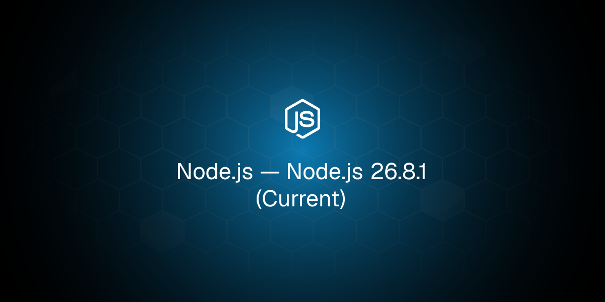
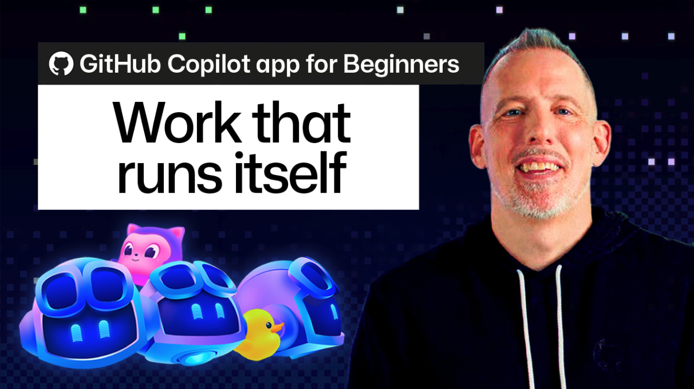
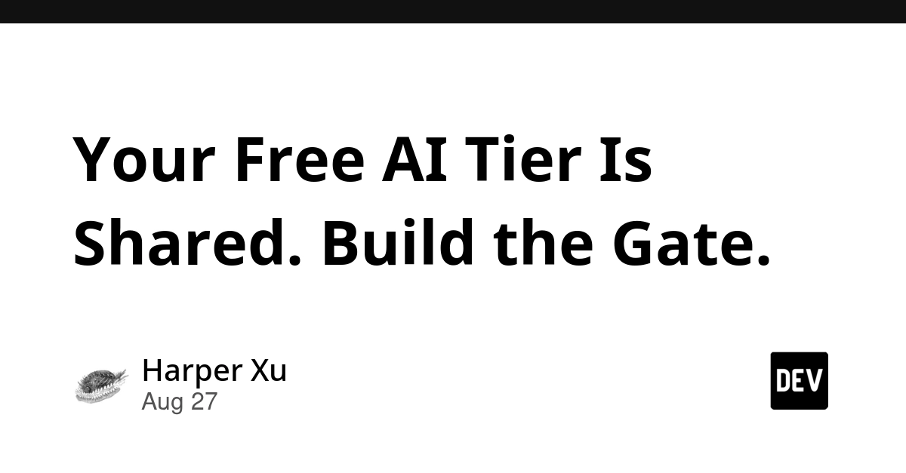
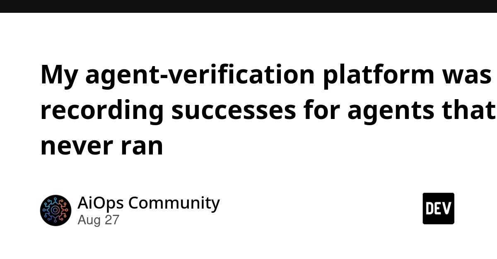
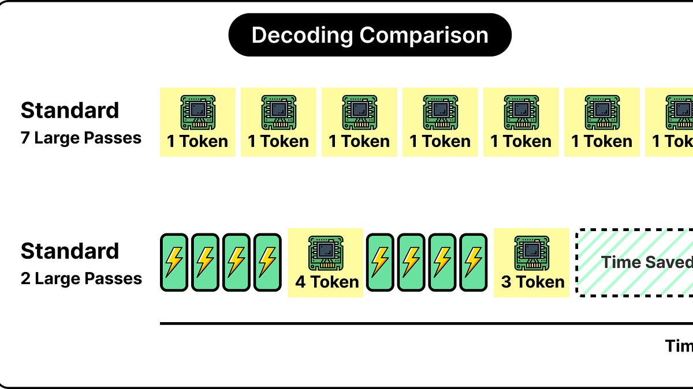
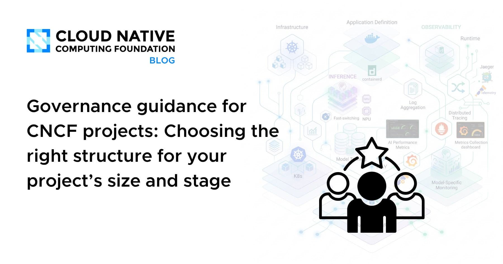
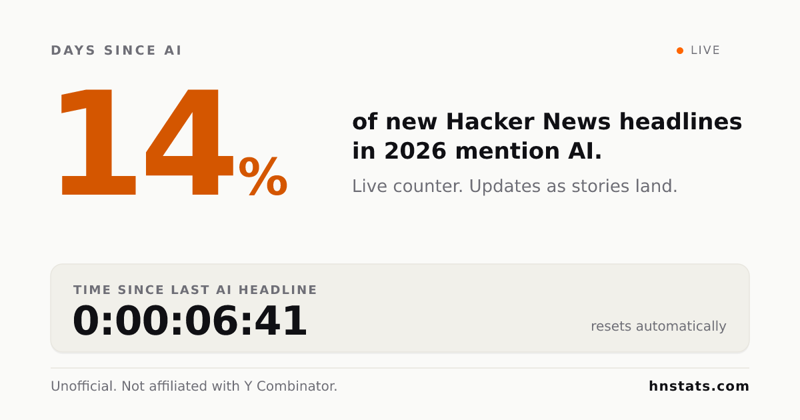
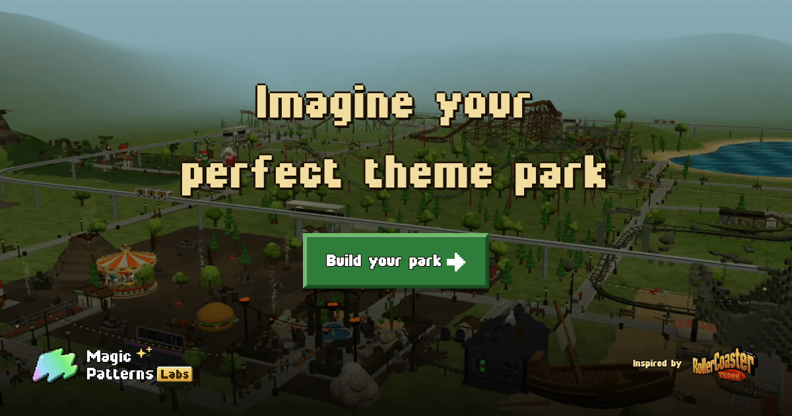

🔥 Top 3 (must read)
Node.js 26.8.1 (Current)
Node.js shipped 26.8.0 and a quick 26.8.1 patch on the Current line, plus 24.20.0 on the LTS line. The LTS update is the one most production apps should plan for. Why it matters: your Node.js backends run on these lines — check the 24.20.0 changelog before your next CI base-image bump.

GitHub Copilot app for Beginners: Automate Dependabot pull request triage
GitHub shows how to let the Copilot app handle Dependabot PRs: review the update, check tests, and move the PR along without a human doing the boring part. Why it matters: dependency-update triage is a classic team time sink, and this is a low-risk way for your team to try agent automation in CI.

Quoting Paul Dix
Simon Willison quotes Paul Dix on a case where AI wrote about 1M lines of code, then refined it over months into reliable software now running on millions of developer machines. Why it matters: it is a concrete, large-scale data point for the "can AI really carry a big codebase" debate you face as an EM deciding how far to push AI adoption.
S
🛠 Tools & releases
Node.js 26.8.1 (Current)
and Node.js 24.20.0 (LTS) — new releases on both lines (see Top 3).
A 403 error and three underlying issues: npm version drift, Node.js requirements, and Cloudflare verification
a LINE bot debugging story where one error hid three separate problems. Good short read on why pinning npm and Node versions matters.
🤖 AI for developers
Automate Dependabot PR triage with the Copilot app
step-by-step setup (see Top 3).
Your free AI tier is shared. Build the gate.
argues you should review the boundary (gateway, budget, concurrency limits) around AI features first, not just the AI output. Useful framing if you expose LLM features to users.

My agent-verification platform was recording successes for agents that never ran
honest postmortem: a platform built on "don't trust the agent" was trusting the agent by default. Four bugs with lessons for anyone building agent pipelines.

How to make LLMs 3X faster
ByteByteGo explains speculative decoding in plain terms. Handy background if your team runs or calls LLM inference.

👔 Engineering & teams
Governance guidance for CNCF projects
patterns from governance reviews of 72 projects on matching structure to project size and stage. The scaling lessons map well onto growing engineering teams, not just open source.

🎯 For me
Node.js 26.8.x / 24.20.0 releases — directly on your backend stack; plan the LTS bump.
Copilot Dependabot triage — a concrete, small first agent-automation win for your team's CI and review flow.
The npm version drift debugging story — a cheap reminder to pin toolchain versions in your pipelines.
💡 App ideas & indie builds
Buslens – where can I get to by bus? (UK)
(HN discussion) — a map that shows everywhere you can reach by bus from a point. The user problem: transit apps answer "how do I get to X" but not "what is reachable from here". Reachability-as-a-map is a reusable idea for housing, jobs, or school search.
R
How much of Hacker News is about AI?
(HN discussion) — tracks the share of AI posts on HN over time. Shows how a tiny, well-scoped stats site on public data can earn attention; the same pattern works for any community you know well.

Build your own theme park
(HN discussion) — a playful in-browser builder. Interesting as a marketing pattern: a fun toy that shows off a company's real product (UI generation) better than a landing page could.

A Vestaboard alternative that doesn't cost $199/year
a cheaper take on the split-flap display. The problem: people love a product but hate its subscription. "Loved product minus the subscription" is a repeatable indie angle.
R
Pen fight game from school days, redesigned
digitizing a childhood playground game. Nostalgia plus zero explanation needed is a strong hook for small game or app ideas.
R
🎓 Try this
Set up the Copilot app to triage your Dependabot PRs on one repo. It is a contained experiment: if it works, your team stops hand-reviewing routine dependency bumps; if it fails, you only lose one repo's config.